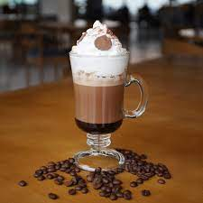

Receitas - Mocha
Como falamos, a Mocha é uma bebida à base de café produzida com café espresso, leite vaporizado,
chocolate e chantilly. Também é chamada de mocaccino, embora possa levar outros nomes em cafeterias
diferentes.

Ingredientes
50 ml de calda de chocolate
50 ml de café espresso, em cápsula ou solúvel.
50 ml de leite vaporizado.
Chantilly.
Açúcar a gosto
Modo de Preparo
Coloque a calda no fundo da caneca ou copo.
Para preparar o leite vaporizado, basta agitar ½ xícara de leite gelado (quanto mais gelado melhor!) em
um pote de vidro com tampa até formar espuma e, em seguida, remover a tampa e esquentar o leite no
microondas por aproximadamente 30 segundos
Acrescente os 50 ml de café espresso já adoçado ao seu gosto. Você pode utilizar também café solúvel.
Vire a parte líquida do leite na caneca e, com uma colher, acrescente a espuma no topo.
Finalize com chantilly e, se desejar, polvilhe chocolate em pó, canela ou raspas de chocolate.